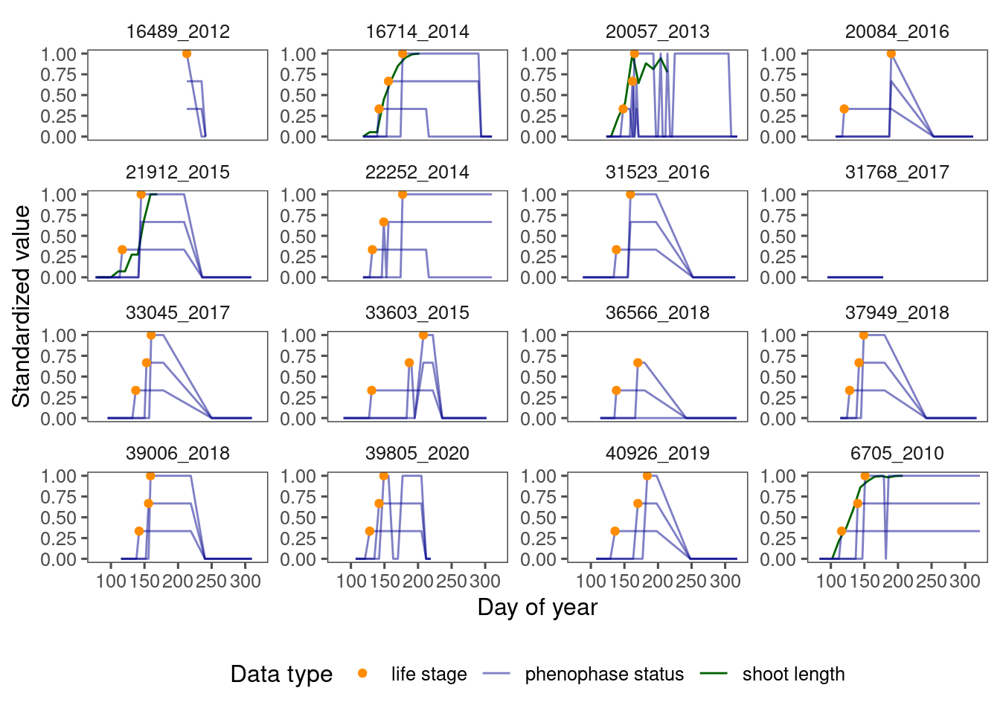

B4WarmED global change experiment

A plot at B4WarmED experiment.

Climate change is causing trees to start growing earlier in the spring, but it’s not clear if this leads to more growth overall. This matters for how much carbon forests can store and which tree species will dominate in the future. Our study looked at how warming and reduced rainfall affect the timing, duration, and amount of spring growth in temperate and boreal forest trees, using data from a long-term global change experiment. We found that higher temperatures make trees leaf out and grow shoots earlier, but different species have different responses when it comes to how long this growth lasts and how much growth they can have in one spring. Reduced rainfall generally slowed down growth. Our results challenge the idea that climate change will boost tree growth, suggesting a possible limit to forests’ ability to absorb carbon dioxide. Also, the combination of warming and drying might change which species are more competitive, favoring those that can better adapt to these conditions.